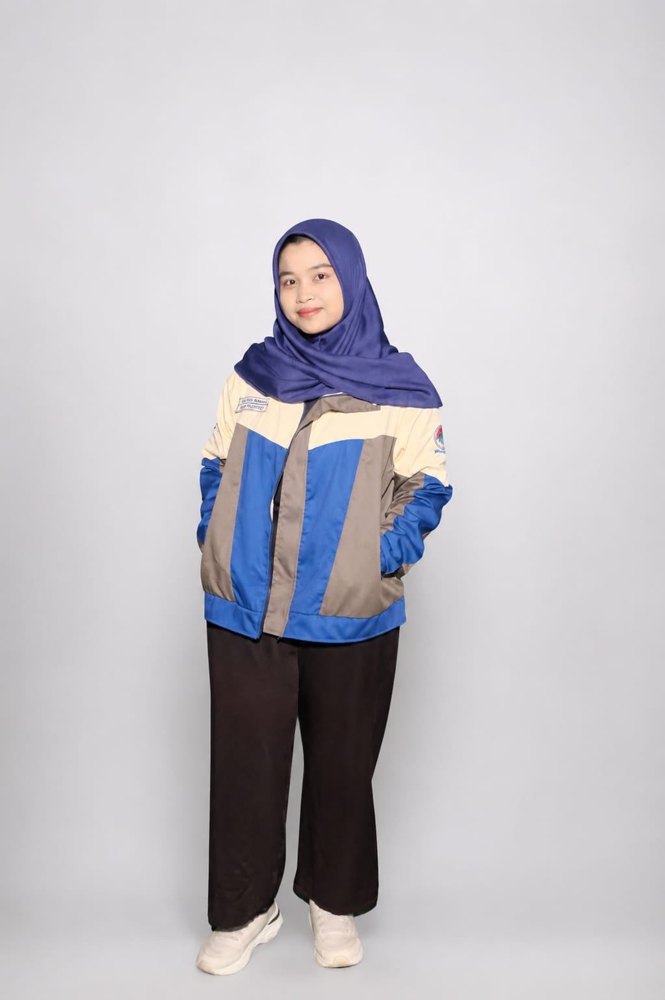

Undergraduate Informatics student at Ahmad Dahlan University specializing in Cyber Security, Full-Stack Web Development, and Malware Analysis.

Hello! I am an Informatics undergraduate student at Universitas Ahmad Dahlan focusing heavily on Cyber Security and backend architectures. I love dissecting network traffic, building secure web apps, and exploring heuristic threat detection.
Beyond academics, I am actively involved in non-academic activities. I have served as an active committee member of the Informatics Student Association (HMIF) for two consecutive terms and participated in various student committees at both the department and faculty levels. I also work as a Teaching Assistant (Asisten Praktikum) for computer science courses and a student employee in faculty administration.
In my spare time, I enjoy reading novels and writing fiction stories, which helps fuel my creative thinking and problem-solving skills.
Cyber Security & Web Dev
HMIF 2 Periods & Asisten Praktikum
Wireshark, Linux Environments, YARA Rules, Network Traffic Analysis, Cryptography
PHP, Laravel, JavaScript, HTML/CSS, Node.js, MySQL Database Normalization
Git, GitHub, VS Code, Laravel Herd, XAMPP, Android Studio, Kotlin, Microsoft Apps
Web prototype built with Laravel to test media upload security and detect heuristic malware anomalies using custom YARA rules.
SelengkapnyaBackend architecture featuring multi-subdomain routing, automated shipping price calculation, and sequential tracking resi numbers.
SelengkapnyaA collection of front-end web projects featuring custom UI themes, interactive mini-games, memory card games, and responsive layouts.
SelengkapnyaComplete compilation of academic projects, certificates, documentation, and coursework assets stored securely in Google Drive.
Buka Google DriveAI Full-Stack Developer Learning Path
Intensive training program covering artificial intelligence integration, full-stack web engineering, and modern scalable application development.
Cloud & Artificial Intelligence Operational Training
Hands-on training focused on operating Google cloud skill labs, exploring generative AI tools, and mastering modern cloud-based automation environments.